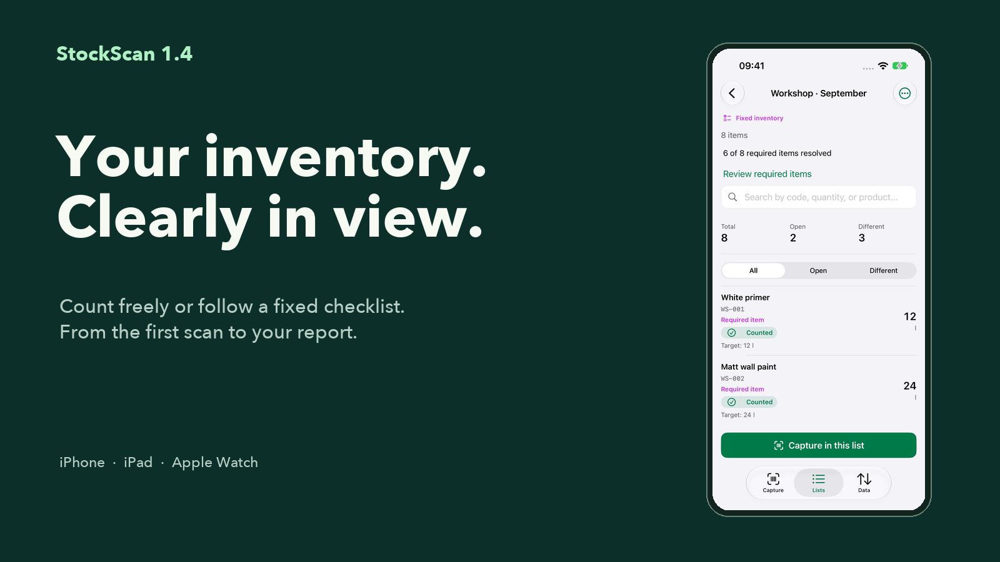

The complete marketing kit
24 App Store visuals for iPhone and iPad, German and English banners, social posts, stories, copy and contact sheets.
Download marketing kitOfficial StockScan materials: real app views, finished visuals and copy for websites, press and social media. In English and German.

24 App Store visuals for iPhone and iPad, German and English banners, social posts, stories, copy and contact sheets.
Download marketing kitStockScan 1.4 as a 1600 × 900 PNG. For websites, newsletters and presentations.
Download PNGA finished 1080 × 1080 visual with a real app view.
Download PNGA 1080 × 1920 portrait visual for stories and status posts.
Download PNGA 1200 × 630 social graphic for link previews and editorial posts.
Download JPGStockScan is the inventory app for iPhone, iPad and Apple Watch. Capture barcodes and quantities, count freely or follow a fixed checklist and export results as CSV for free. Pro adds tools including Excel reports and private iCloud sync.
Your inventory. Clearly in view. StockScan 1.4 brings Capture, Lists and Data into one clear workflow. Import fixed checklists, review open items before completion and reuse your checklist next time. Start free: 1 active inventory, up to 100 items and unlimited CSV exports.
Materials on the shelf. Quantities in view. Scan items, calculate packs right in the app and take your stock count with you as CSV. For storage, workshops and service vans, with core inventory that works offline.
For your regular stocktake: StockScan Pro adds unlimited lists and items, Fast Scan, enriched Excel reports, target-versus-actual comparisons and complete count lists on Apple Watch. Optional private iCloud sync keeps your own devices in step.
These materials may be used for reporting on StockScan and promoting the app. App views show fictional sample data. Please retain Pro labels and device availability qualifications. Trademarks remain the property of their respective owners.